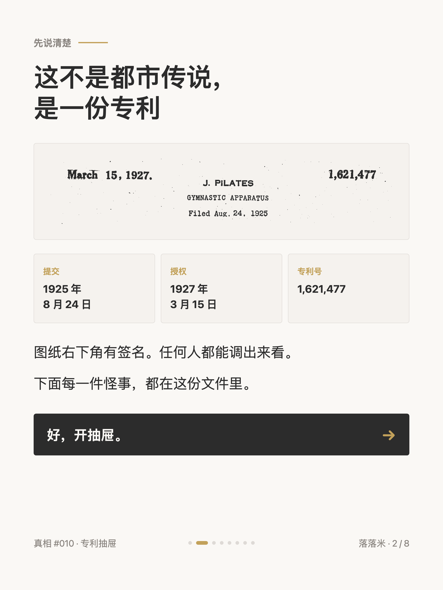
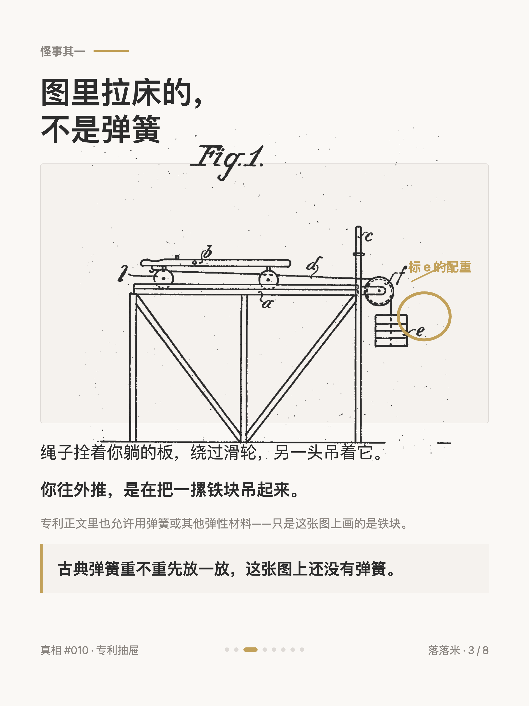
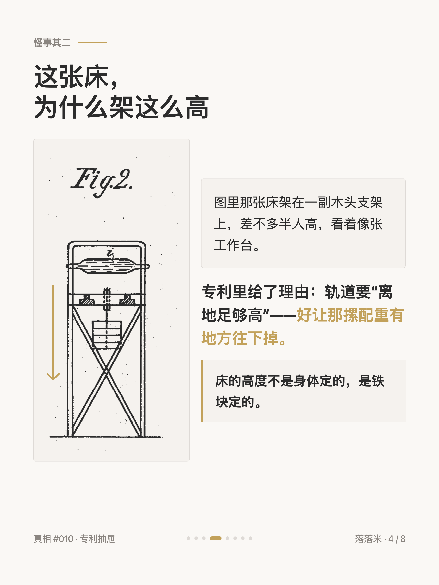
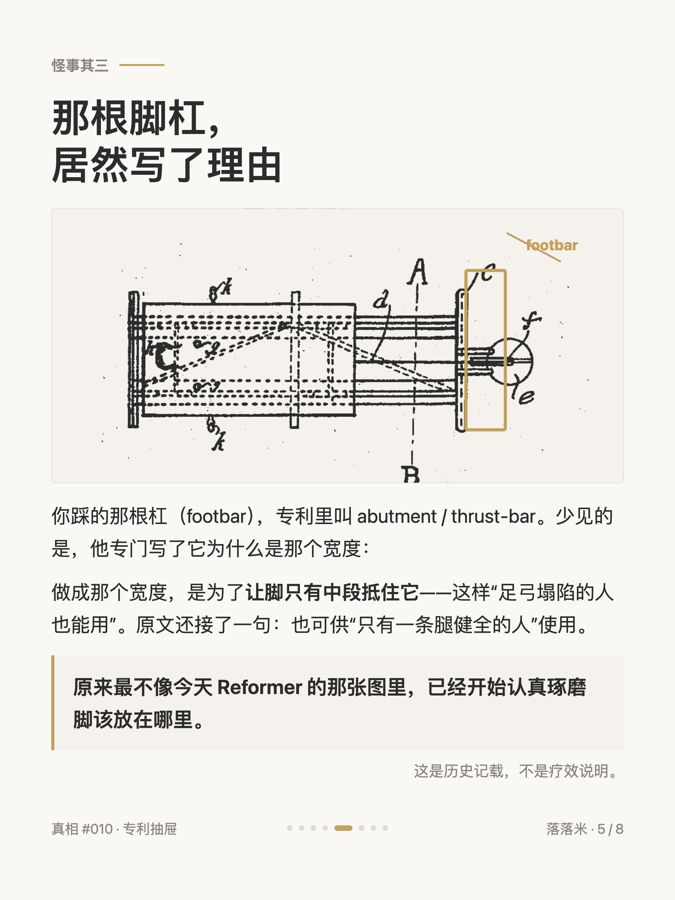
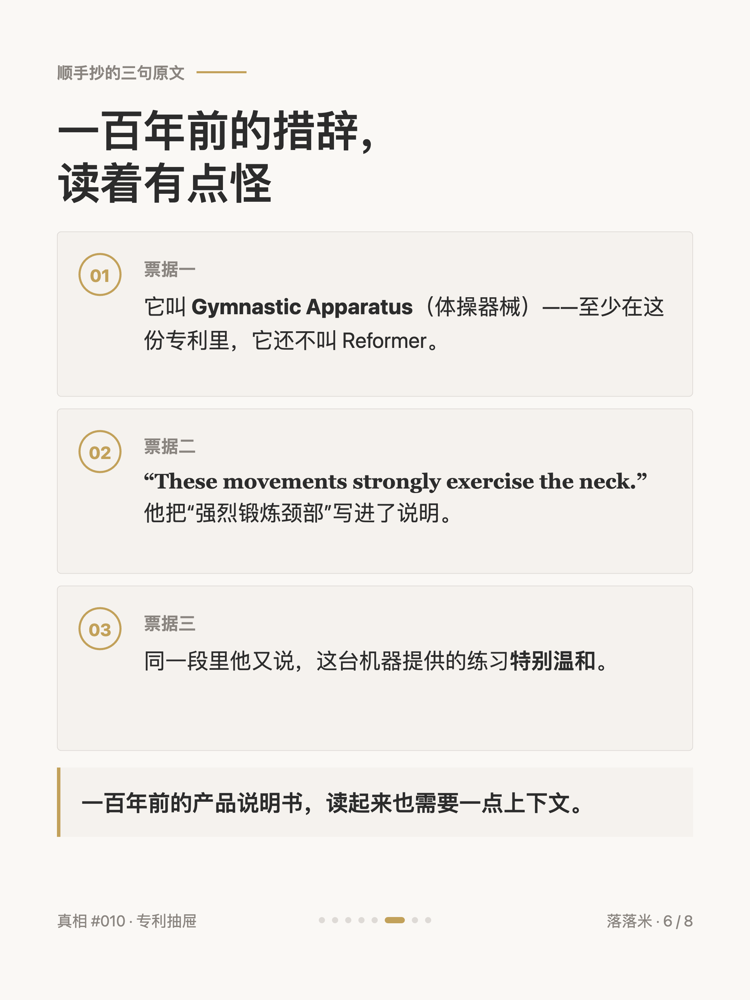
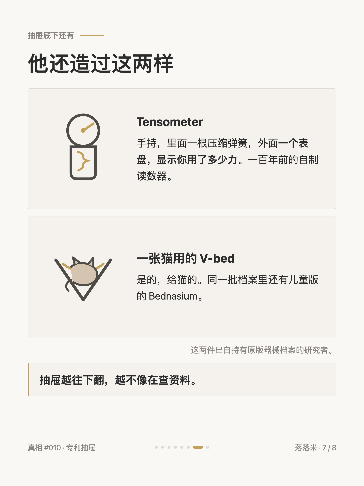
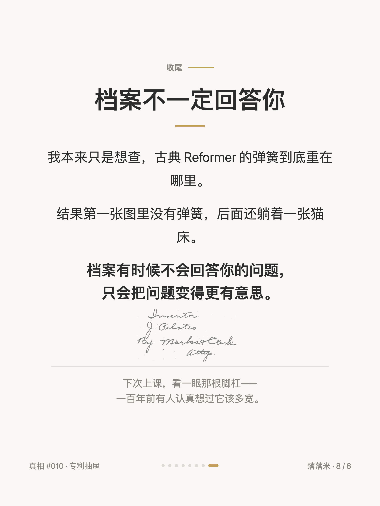

普拉提真相 #010
普拉提早期那台器械，挂着一摞铁块

1 / 8

2 / 8

3 / 8

4 / 8

5 / 8

6 / 8

7 / 8

8 / 8
← 左右滑动浏览全部卡片 →
我本来只想查一件小事：大家都说古典普拉提的弹簧"重一点"，到底重在哪。
于是去翻了祖师爷的专利。翻开第一张图就没往下走成——那台机器上没有弹簧，拉着床的是一摞铁块，绳子绕过滑轮吊着。
床架得半人高，理由写在文件里：得给铁块留出往下掉的地方。
那根你踩的脚杠倒是写了设计理由：做成那个宽度，是为了让脚只有中段抵住。
还有些读着有点怪的措辞——他管它叫 Gymnastic Apparatus，说这机器"强烈锻炼颈部"，同一段里又说它"特别温和"。
抽屉底下还躺着一个带表盘的手持测力器，和一张给猫做的床。
档案有时候不会回答你的问题，只会把问题变得更有意思。
（专利号 1,621,477，1927 年授权，公开可查。引语均为原文直引。）